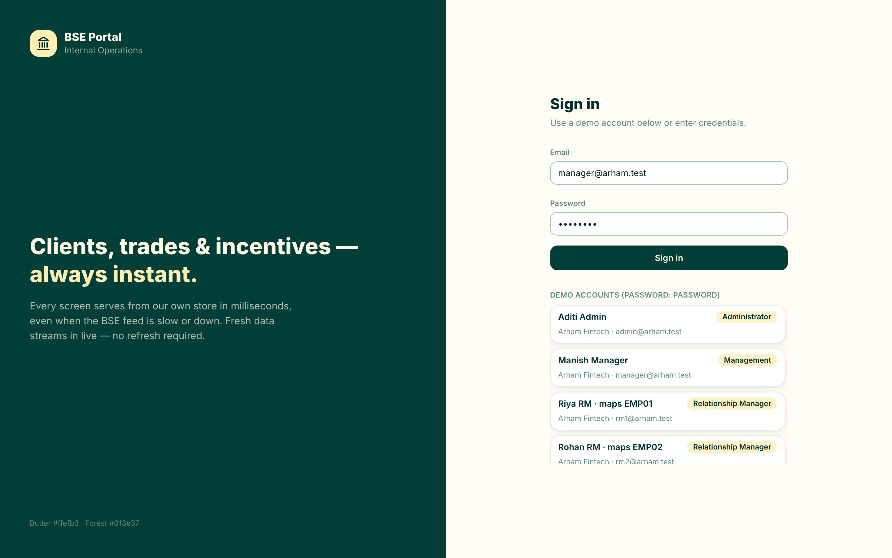
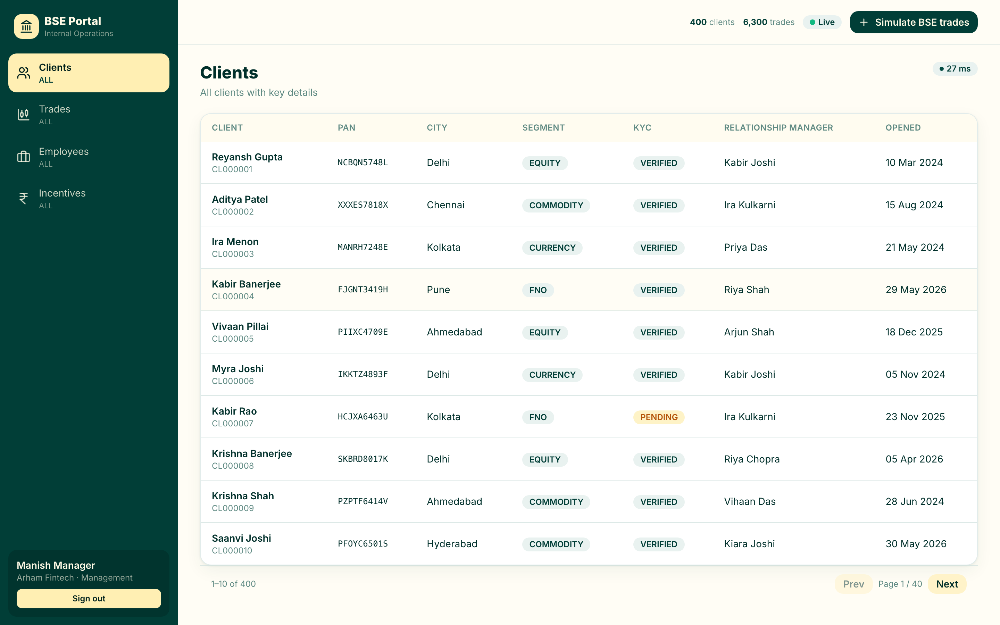
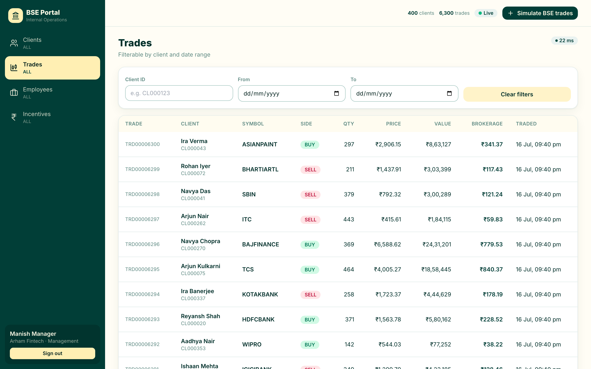
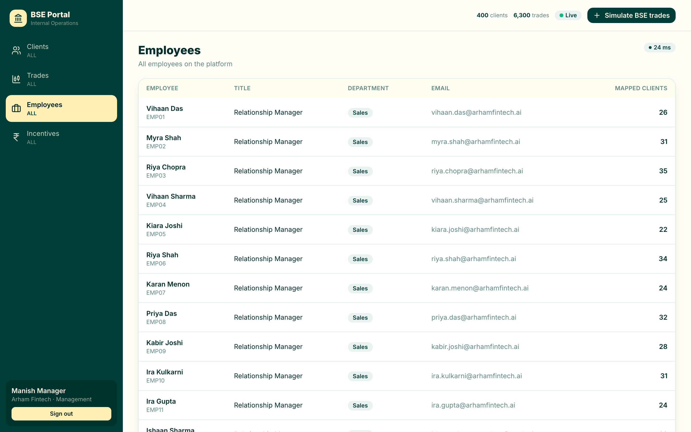
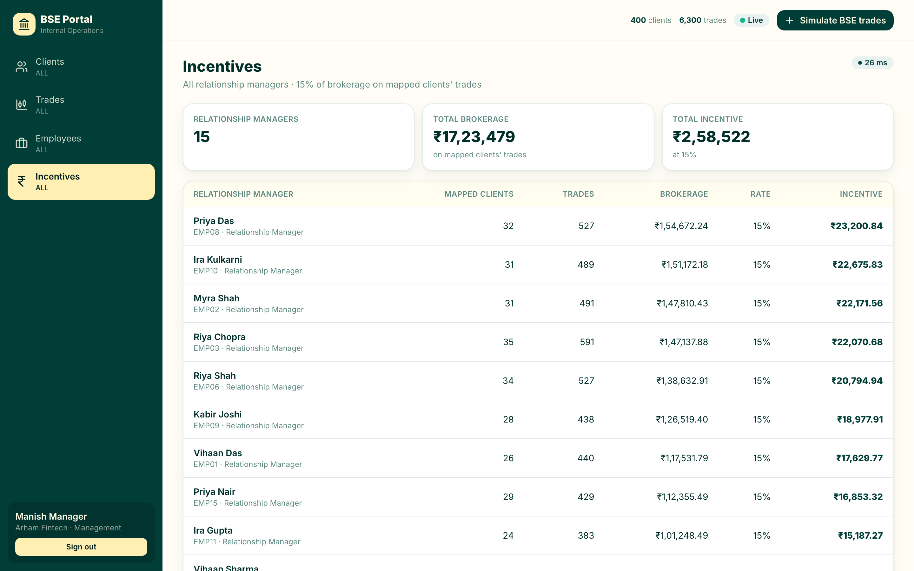
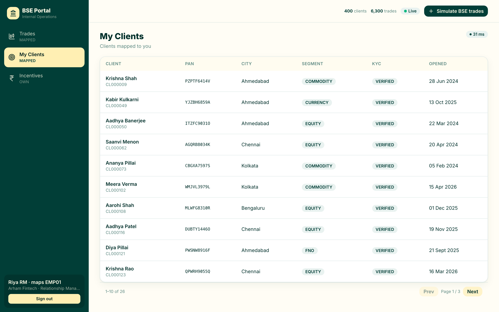
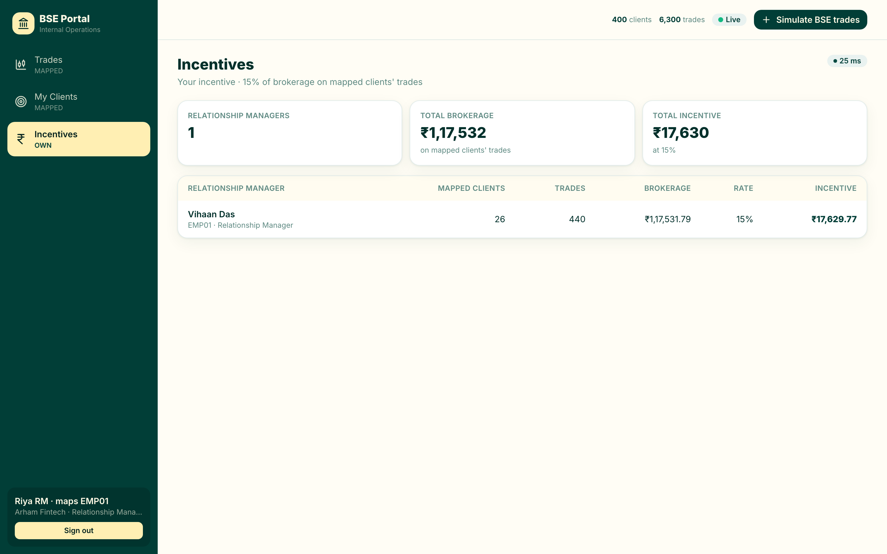
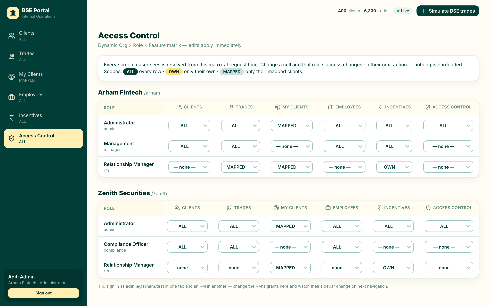
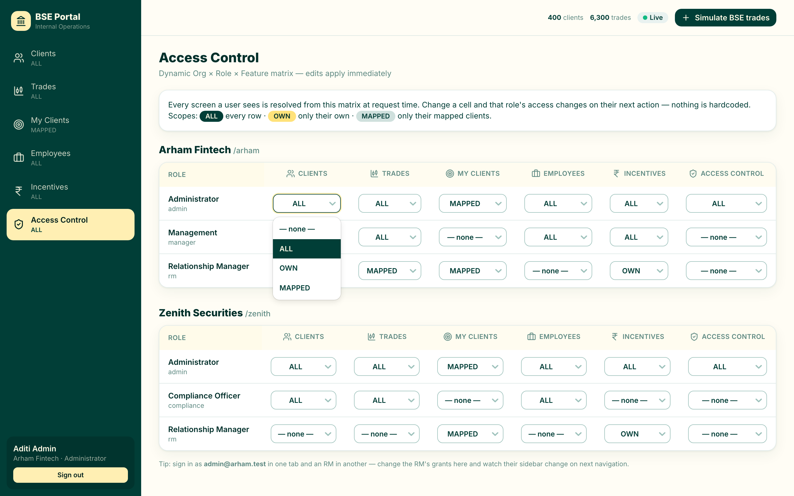

A stock-broking operations portal that stays instant even when the exchange feed is slow or down — with live updates and fully dynamic, per-organisation access control.
Part A — Mock BSE API · Part B — Internal Portal · v1.0 · 16 Jul 2026
BSE Portal is an internal web application for a stock-broking firm. It brings together two very different data sources and presents them to staff through role-appropriate screens:
From BSE trades combined with the internal mappings, the portal computes relationship-manager incentives (a percentage of the brokerage earned on a manager's mapped clients' trades).
The trick behind the promise is a clean split: ingestion and serving never touch each other. A background worker slowly mirrors BSE into our own database; the portal only ever reads that database. So the slow, unreliable feed can never make a screen slow or unavailable.
You need Node.js 20+ and Docker (for Postgres). From the project root:
npm install # install all workspaces npm run db:up # start Postgres (Docker) npm run prisma:migrate # create the database schema npm run seed # load roles, features & demo users npm run dev # start mock API + portal server + web UI
Once running, open the portal in your browser:
The sign-in screen lets you type credentials or pick a ready-made demo account. Every demo account uses
the password password. Your account's organisation and role decide which
screens you see and how much data each screen shows.

Access is a combination of three things — Organisation × Role × Feature — and each grant carries a scope that narrows the rows you can see:
| Scope | Meaning | Example |
|---|---|---|
| ALL | every row | Management sees all clients & all incentives |
| OWN | only the signed-in user's own records | An RM sees only their own incentive |
| MAPPED | only rows tied to the user's mapped clients | "My Clients" and that RM's trades |
All clients with key details: PAN, city, trading segment, KYC status, their relationship manager, and when the account was opened. The badge on the right shows the server response time — proof the screen met the sub-second requirement.

Every trade with symbol, side, quantity, price, value and brokerage. Filter by a specific client id and/or a date range. Management sees all trades; a relationship manager sees only their mapped clients' trades.

Everyone on the platform, their title and department, and how many clients each relationship manager carries.

Incentive = 15% of the brokerage on each relationship manager's mapped clients' trades. Management sees every RM with totals up top; an RM sees only their own row.

A relationship manager signs in to a deliberately smaller portal: no firm-wide Clients, Employees, or Access Control in the sidebar. "My Clients" shows only the clients mapped to them.


Administrators get an Access Control screen: a live matrix of Organisation × Role × Feature. Nothing here is hardcoded — every screen a user sees is resolved from this matrix at request time, so changing a cell changes that role's access on their very next action.

Each cell is a dropdown; pick a scope (or "none" to revoke). The change is saved immediately.

Because screens read only from our own store, they never wait on the exchange. You can stop the Mock BSE API entirely and the portal keeps serving every screen instantly — it simply stops receiving new data until the feed returns. The response-time badge on each screen makes this visible.
Use the “+ Simulate BSE trades” button in the top bar to inject fresh trades into the mock feed. On the next sync cycle the worker ingests them and pushes a WebSocket event; the Trades and Incentives screens update on their own. The Live indicator and the counts in the top bar reflect the flow.
✗ mid-pull failure → ↻ retry → ✓ synced. That is the resilience
working as designed, not an error.password)| Organisation | Role | Sees | |
|---|---|---|---|
| admin@arham.test | Arham Fintech | Administrator | everything, incl. Access Control |
| manager@arham.test | Arham Fintech | Management | Clients, Trades, Employees, Incentives (all) |
| rm1@arham.test | Arham Fintech | Relationship Manager | My Clients, own Trades, own Incentive |
| rm2@arham.test | Arham Fintech | Relationship Manager | a different mapped book |
| admin@zenith.test | Zenith Securities | Administrator | everything |
| compliance@zenith.test | Zenith Securities | Compliance Officer | Clients, Trades, Employees (no incentives) |
| rm@zenith.test | Zenith Securities | Relationship Manager | My Clients + own Incentive (no Trades screen) |
| Service | URL |
|---|---|
| Internal Dashboard (web) | http://localhost:5173 |
| Portal API (+ WebSocket at /ws) | http://localhost:4002 |
| Mock BSE API | http://localhost:4001 |
| Postgres | localhost:5433 |
| Setting | Effect |
|---|---|
MOCK_BSE_DELAY_MS | per-page delay of the mock feed (set high to simulate the 10-minute pull) |
MOCK_BSE_FAILURE_RATE | probability a page fails mid-pull (default 0.2) |
SYNC_INTERVAL_MS | how often the worker runs a sync cycle |
INCENTIVE_RATE | RM share of brokerage (default 0.15) |
BSE Portal · Part A (Mock BSE API) + Part B (Internal Portal) · React · TypeScript · Prisma · PostgreSQL